Proposal favorite
regex-shortcut
Sift reading0.9593
RouteProbe first
Explore wide. Prove cheap. Commit once.
JevRev helps coding agents sift options, run bounded probes, and decide from recorded evidence.

The interface follows the decision. Select a move to inspect the question it must answer and the evidence it passes forward.
Sift compares distinct mechanisms, then issues bounded work orders. A high score opens an investigation. It does not close the case.
A regex scanner ranked first on paper and ran faster locally. It failed quoted-field correctness. The state machine passed and won.
Faster is not the same as right.The same five correctness cases and seven benchmark samples were recorded for each candidate. Required checks controlled the final route.
Your coding agent still writes the code. JevRev makes the route explicit.
npm install -g jevrev